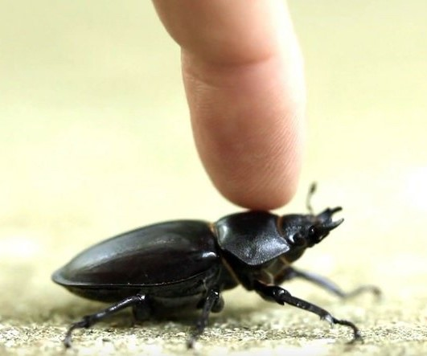
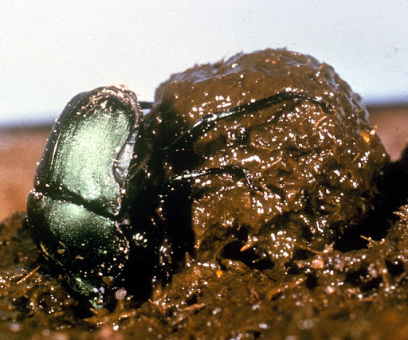
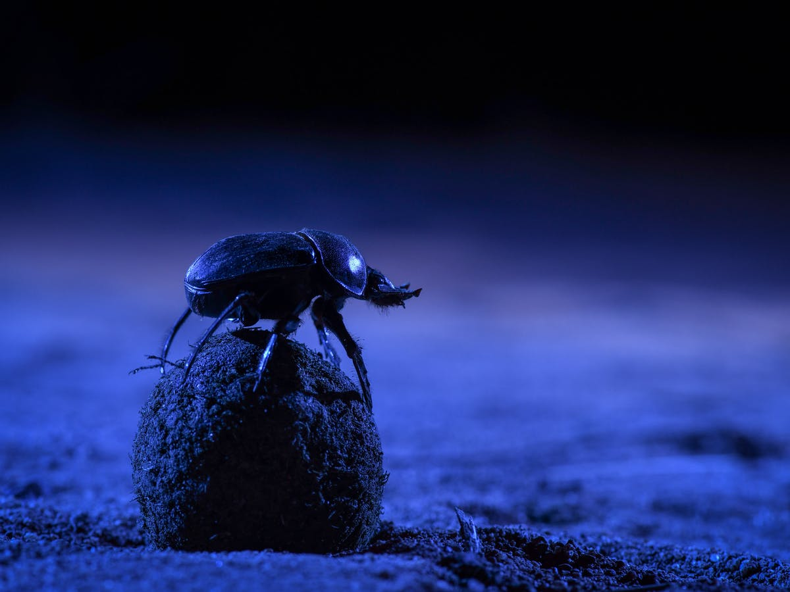
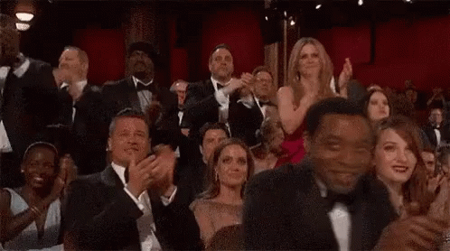
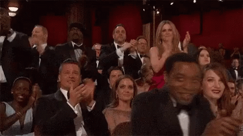

"El mayor levantador de pesas del mundo"
De la serie "Habitantes Maravillosos"

Si te digo que uno de nuestros habitantes maravillosos basa su vida entera en una pelota de "popó", me responderías “Bullshit!” (porquerías!)
Bueno, claro que estás en tu derecho de disentir conmigo, pero yo amo esta especie, amo todo sobre ella, y por supuesto, la encuentro maravillosa, estupenda, absolutamente increíble!
Bueno, claro que estás en tu derecho de disentir conmigo, pero yo amo esta especie, amo todo sobre ella, y por supuesto, la encuentro maravillosa, estupenda, absolutamente increíble!

El escarabajo de estiercol, más conocido aquí como el escarabajo pelotero es un insecto coleóptero que no sólo consume materia fecal como desayuno como su nombre indica, sino también carroña (cuerpos de organismos muertos), hongos, fruta podrida y otras sustancias en descomposición.Sí, ellos son muy fanáticos de los olores apestosos!
Sin embargo, tienen un paladar exigente a pesar de todo! Prefieren excremento de animales omnivóros antes que de herbívoros, y de hecho, nuestro popó y el de chimpances son sus favoritos! No estoy inventando! Esto fue probado en una investigación que involucró 9000 escarabajos peloteros de 15 diferentes especies, llevada a cabo por la Sociedad Entomológica de America.
Los escarabajos peloteros reunen la “materia prima” de la naturaleza, la modelan y la ruedan hasta el el sitio donde quieren dejarla mostrando una habilidad de coordinación muy desarrollada: se apoyan en las patas delanteras y empujan la bola con las patas traseras. El movimiento consume un montón de energía.
Sin embargo, tienen un paladar exigente a pesar de todo! Prefieren excremento de animales omnivóros antes que de herbívoros, y de hecho, nuestro popó y el de chimpances son sus favoritos! No estoy inventando! Esto fue probado en una investigación que involucró 9000 escarabajos peloteros de 15 diferentes especies, llevada a cabo por la Sociedad Entomológica de America.
Los escarabajos peloteros reunen la “materia prima” de la naturaleza, la modelan y la ruedan hasta el el sitio donde quieren dejarla mostrando una habilidad de coordinación muy desarrollada: se apoyan en las patas delanteras y empujan la bola con las patas traseras. El movimiento consume un montón de energía.
 Qué haces cuando tener calor?
Qué haces cuando tener calor?Bueno, los escarabajos peloteros usan su bola de excremento para mantenerse frescos, metiendo sus patas dentro. Tambieén regurgitan en sus patas y luego se frotan la cara, para disminuir el sobrecalentamiento de sus cabezas. Asqueroso pero inteligente!
En la imagen podemos ver uno de los sujetos del experimento realizado. Le pusieron guantes de silicona en sus patas, que le mantienen la temperatura controlada por más tiempo antes de empezar a elevarse. Los escarabajos así "vestidos" escalaron la bola de estiercol menos veces que el grupo control, con patas "desnudas".
También, el popó es utilizado para traer vida a la Tierra.
Las hembras dividen el excremento -a partir de la bola colectada por el macho- en 3 o 4 porciones y las entierran en el suelo. En cada una de estas "nido bolas", como se conocen en el ambiente, la hembra pone un huevo a partir del cual emergerá un nuevo escarabajo pelotero, un bebé, una nueva vida. El proceso entero toma 28 días.
Fue probado que los escarabajos peloteros son los seres con la mayor fuerza en el mundo, en términos de peso levantados vs. peso corporal. Son capaces de levantar nada más y nada menos que 1.141 veces su propio peso!!!! Esto supera el poder de muchos animales de gran tamaño, pero la cosa es que los escarabajos peloteros son pequeños insectos, con una estructura corporal muy liviana para mantener, entonces pueden gastar toda esa energía en... empujar caca. Es sabido por los expertos en el campo que si tuvieramos una máquina como la de los Vengadores, y pudiéramos agrandar a estos insectos, simplemente perderían su poder.
 Esta fuerza es muy importante para pelear con sus competidores. Cuando otro macaho entra a la guarida (que tiene forma de túnel) el escarabajo pelotero empuja al otro hacia afuera con sus patas. Por eso, es usual otra estrategia: robarle al competidor su bola de porquería luego que todo el trabajo fue hecho e ir a impresionar a la princesa del cuento con el banquete sin haber gastado energía ni haber hecho mucho esfuerzo.
Esta fuerza es muy importante para pelear con sus competidores. Cuando otro macaho entra a la guarida (que tiene forma de túnel) el escarabajo pelotero empuja al otro hacia afuera con sus patas. Por eso, es usual otra estrategia: robarle al competidor su bola de porquería luego que todo el trabajo fue hecho e ir a impresionar a la princesa del cuento con el banquete sin haber gastado energía ni haber hecho mucho esfuerzo.
 Veamos a "Hércules y Arnold" luchando por el trofeo de mierda mientras dos pibes se divierten a sus expensas Sabés que los súper envidio, no?
Veamos a "Hércules y Arnold" luchando por el trofeo de mierda mientras dos pibes se divierten a sus expensas Sabés que los súper envidio, no?
Esta fuerza es muy importante para pelear con sus competidores. Cuando otro macaho entra a la guarida (que tiene forma de túnel) el escarabajo pelotero empuja al otro hacia afuera con sus patas. Por eso, es usual otra estrategia: robarle al competidor su bola de porquería luego que todo el trabajo fue hecho e ir a impresionar a la princesa del cuento con el banquete sin haber gastado energía ni haber hecho mucho esfuerzo.
Veamos a "Hércules y Arnold" luchando por el trofeo de mierda mientras dos pibes se divierten a sus expensas Sabés que los súper envidio, no?

Puede que yo tenga un problema, pero siempre encuentro algo romántico sobre todos nuestros protagonistas en la Colección "Habitantes Maravillosos". También en este caso!
Los escarabajos peloteros usan el sol como referencia para la orientación diurna, y la luna y los cuerpos celestes en el cielo durante la noche. Así pueden ir en línea recta a su guarida, sin desvíos innecesarios. Para ello, una vez que están encima de su bola de excremento, "bailan" (efectúan unos graciosos pasos) para tomar imágenes mentales del cielo y guardarlas en sus cerebros. Recientemente fue descubierto que cuando ninguna de estas opciones es posible (ciertos momentos del día o ciertos climas) los escarabajos hacen uso del viento para orientarse.
Un planetario artificial en Sudáfrica fue clave para dilucidar todo esto, ya que desconcertaba a los científicos que los escarabajos peloteros siempre se movieran en línea recta hacia su objetivo. Allí, los investigadores pudieron manipular la posición de los astros, la luz, el viento… El resultado pretende ayudar al desarrollo de sistemas de navegación para vehículos autónomos.
Los escarabajos peloteros usan el sol como referencia para la orientación diurna, y la luna y los cuerpos celestes en el cielo durante la noche. Así pueden ir en línea recta a su guarida, sin desvíos innecesarios. Para ello, una vez que están encima de su bola de excremento, "bailan" (efectúan unos graciosos pasos) para tomar imágenes mentales del cielo y guardarlas en sus cerebros. Recientemente fue descubierto que cuando ninguna de estas opciones es posible (ciertos momentos del día o ciertos climas) los escarabajos hacen uso del viento para orientarse.
Un planetario artificial en Sudáfrica fue clave para dilucidar todo esto, ya que desconcertaba a los científicos que los escarabajos peloteros siempre se movieran en línea recta hacia su objetivo. Allí, los investigadores pudieron manipular la posición de los astros, la luz, el viento… El resultado pretende ayudar al desarrollo de sistemas de navegación para vehículos autónomos.
Una vez más, tenemos en mi blog una especie que debería ser más apreciada y reconocida.
La actividad del escarabajo pelotero tiene un impacto muy positivo en el medio ambiente, haciendo que la tierra esté más aereada y fertilizándola con el reingreso de materia orgánica en la misma. También, esparcen semillas al enterrar las pelotas de excremento.

Científicos dicen que de otra manera la acumulación de materia fecal sería insoportable para el ecosistema. Fue calculado que los insectos coprófagos entierran 1.5 toneladas de materia fecal por hectárea cada año, ayudando a dismunuir la propagación de parásitos y organismos patógenos. Aplauso de pie para los escarabajos peloteros!!! 
Como dependen directamente de la deposición de otros animales para su alimentación y anidamiento, los escarabajos peloteros son muy empleados en los estudios de conservación de biodiversidad. Son una especie muy vulnerable a la destrucción de hábitat salvajes.
La actividad del escarabajo pelotero tiene un impacto muy positivo en el medio ambiente, haciendo que la tierra esté más aereada y fertilizándola con el reingreso de materia orgánica en la misma. También, esparcen semillas al enterrar las pelotas de excremento.
Científicos dicen que de otra manera la acumulación de materia fecal sería insoportable para el ecosistema. Fue calculado que los insectos coprófagos entierran 1.5 toneladas de materia fecal por hectárea cada año, ayudando a dismunuir la propagación de parásitos y organismos patógenos. Aplauso de pie para los escarabajos peloteros!!! 
Como dependen directamente de la deposición de otros animales para su alimentación y anidamiento, los escarabajos peloteros son muy empleados en los estudios de conservación de biodiversidad. Son una especie muy vulnerable a la destrucción de hábitat salvajes.
Gracias por leerme!!
Espero que hayas disfrutado mucho mi trabajo! No sólo redacté el texto del post sino que también escribí el código de la página web y su diseño. El desafío es grande pero soy una estudiante muy estusiasta. :)
Por favor, dame tu "ME GUSTA" y COMPARTÍ la publicación para ayudarme a expandir la comunidad de habitantes maravillosos! Si accedes a través de una computadora, recordá que podés dejar tu comentario al final de la página. O podés enviarme un e-mail, si querés!. De cualquier manera que prefieras voy a apreciar mucho tu apoyo!.
Si te gustó el tema, te invito a leer el contenido BONUS debajo.
 Comienzo a pensar que nosotros -los humanos- asociamos todo a la inmortalidad.
Comienzo a pensar que nosotros -los humanos- asociamos todo a la inmortalidad.Curiousamente, en Egipto el escarabajo pelotero era un símbolo de vida y poder. Amuletos con la forma de este insecto eran usados como protección contra lo malicioso y mejorar la fuerza y coraje para superar peligros. En fallecidos, el amuleto era dejado al lado del cuerpo para hacer posible la resurrección y el renacimiento de una nueva y eterna vida.
Sin más que hacer, me despido por ahora! Hasta el próximo post!
Algunas fuentes:
"Escarabeo" por Wikipedia
"Para qué quieren las pleotas los escarabajos de estiercol?" por ABC ciencia
"Los escarabajos peloteros se orientan de una manera muy sofisticada" por National Geographic
"Dung beetles are studied as biodiversity indicator" por Argentina Investiga
"Did you know that dung bettles are the strongest insect in the world?" por Investigación y Desarrollo México